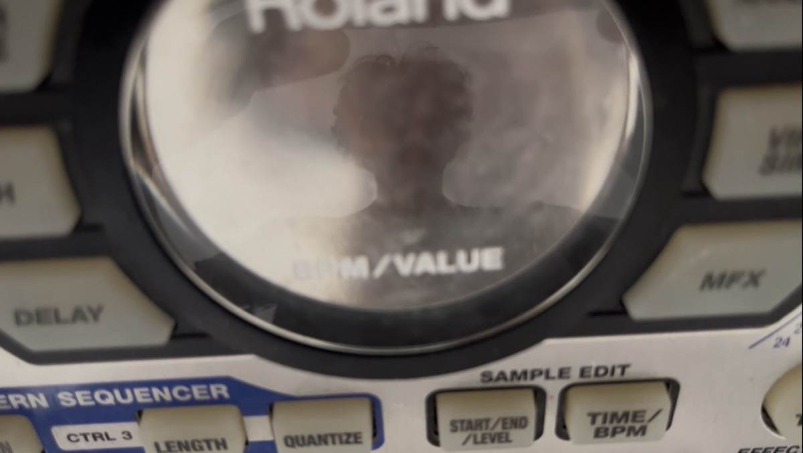

Bio
Andrea Alice is a producer and singer based in Rome. He released three EPs and an album under the project Policrom, active since 2010, including a collaboration with Cosmo on the production of La Vita degli Altri (2016), an album released by Morgana, the label of the eponymous music club in Sannio.
Andrea Alice's new musical identity draws on these earlier sonic experiences, reworking and expanding them — exploring the connections between IDM and it-pop, with a focus on the craftsmanship of sound and the centrality of a DIY attitude. What unites these different influences is the urge to use sound as a collective aggregator: a meeting place for desires, a crossing point of possible futures, of human experiments.
